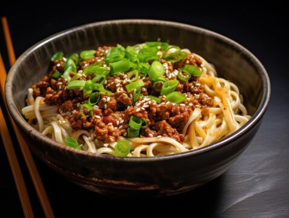

Home
Dan Dan Noodles

Description
Dan dan noodles is a tasty and spicy Chinese noodle dish. There are multiple variations of this dish.
Most notably, one with a broth and one without. Today, we are going to be making the version without the broth.
Ingredient list
For the protein.
- 1/2 lbs ground pork, beef, or chicken
- 1 tbsp chopped garlic
- 1 tbsp soy sauce
- 1 tbsp shaoxing wine
- pinch of black pepper
For the sauce.
- 1 tbsp cooking oil
- 1 tsp chopped garlic
- 2 tbsp tahini or peanut butter (I like PB fit, so I use that instead)
- 1 1/2 tbsp soy sauce
- 1 tsp dark soy sauce
- 3 tbsp chili oil with chili flakes
- 1 - 3 tsp toasted and grinned sichuan peppercorns
- 1/2 tbsp sugar
To Assemble.
- 2 portions of fresh egg noodles or spaghetti noodles
- handful of bok choy.
- 1/4 cup hot chicken broth
- green onion chopped
- crushed peanuts or sesame seeds for garnish
Instructions
- Mix all the ingredients in the protein section together. Let it sit and marinate while preparing the other ingredients.
- Combine all ingredients in the sauce section together in a mixing bowl. The sauce can be stored in the refrigerator up to 5 days before going bad.
- Heat a wok over high heat, add 1 tbsp cooking oil and swirl to coat. Add the pork mixture and stir fry until pork is fully cooked, no more moisture on the bottom and slightly have brown edges, about 3 to 4 minutes. Add preserved mustard green and stir fry 1 to 2 minutes. Remove from heat and keep it warm.
- Cook noodles by following the directions of the package you’re using. At the last minute of cooking noodles, add bok choy or your choice of green vegetables into boiling water with noodles. Cook all together for 1 minute, drain.
- Place half of the sauce (approximately 3 tbsp) on a bottom of serving bowl and lay the noodles on top of the sauce. Arrange the blanched green vegetable on top of the noodles then cooked pork mixture. Pour hot chicken broth around the edge of the bowl. Garnish with chopped green onions and crushed peanuts or sesame seeds. Mix everything thoroughly, enjoy!